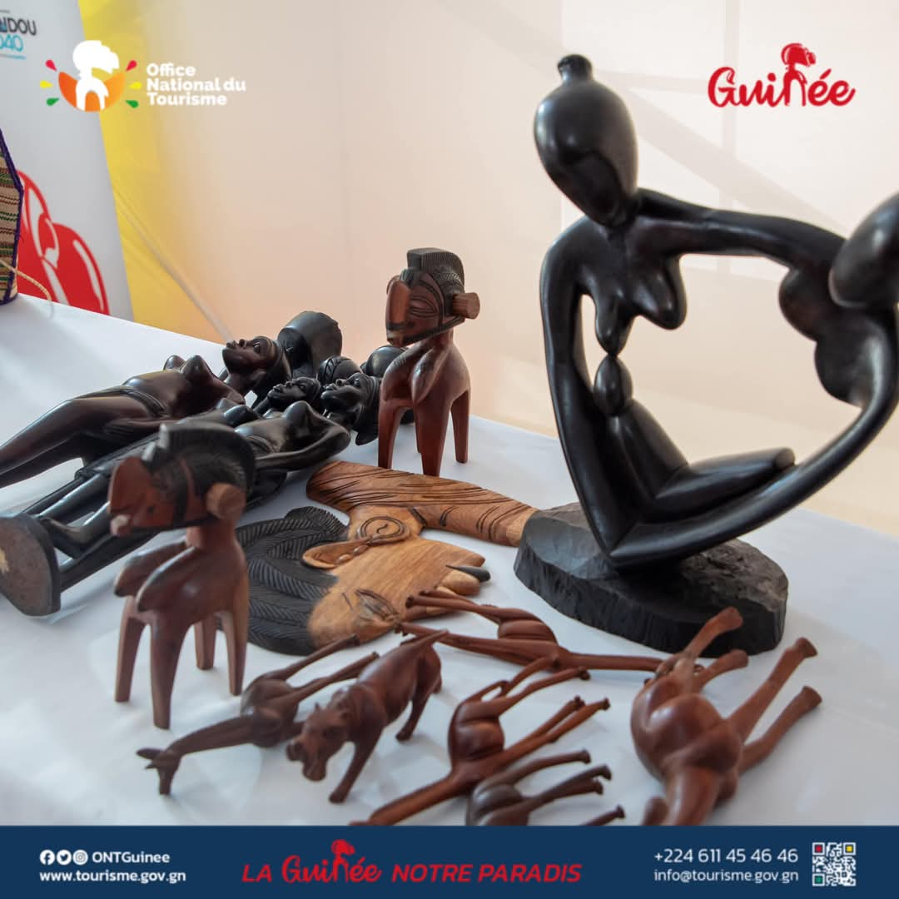
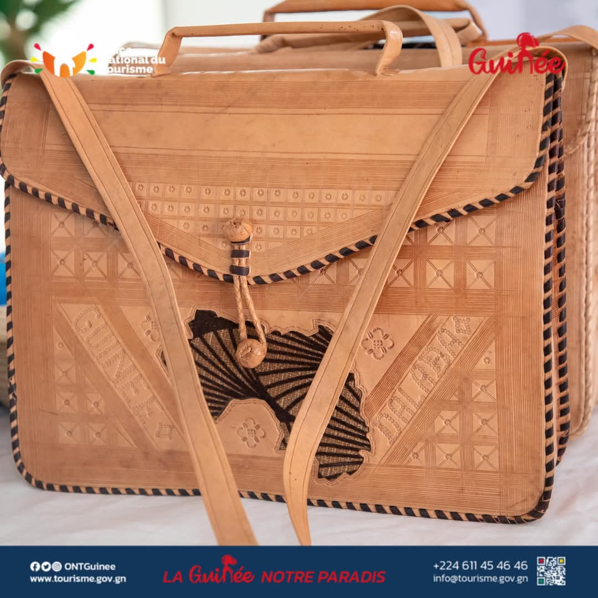
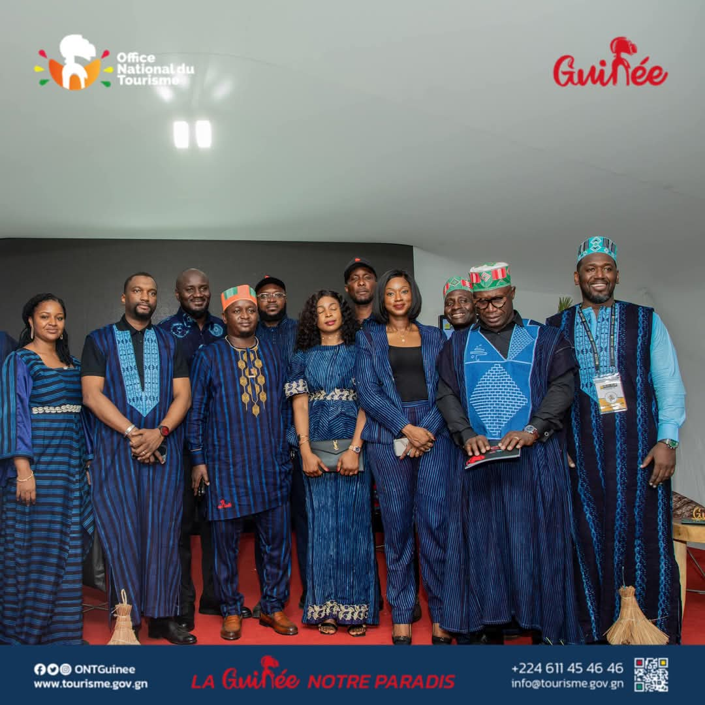
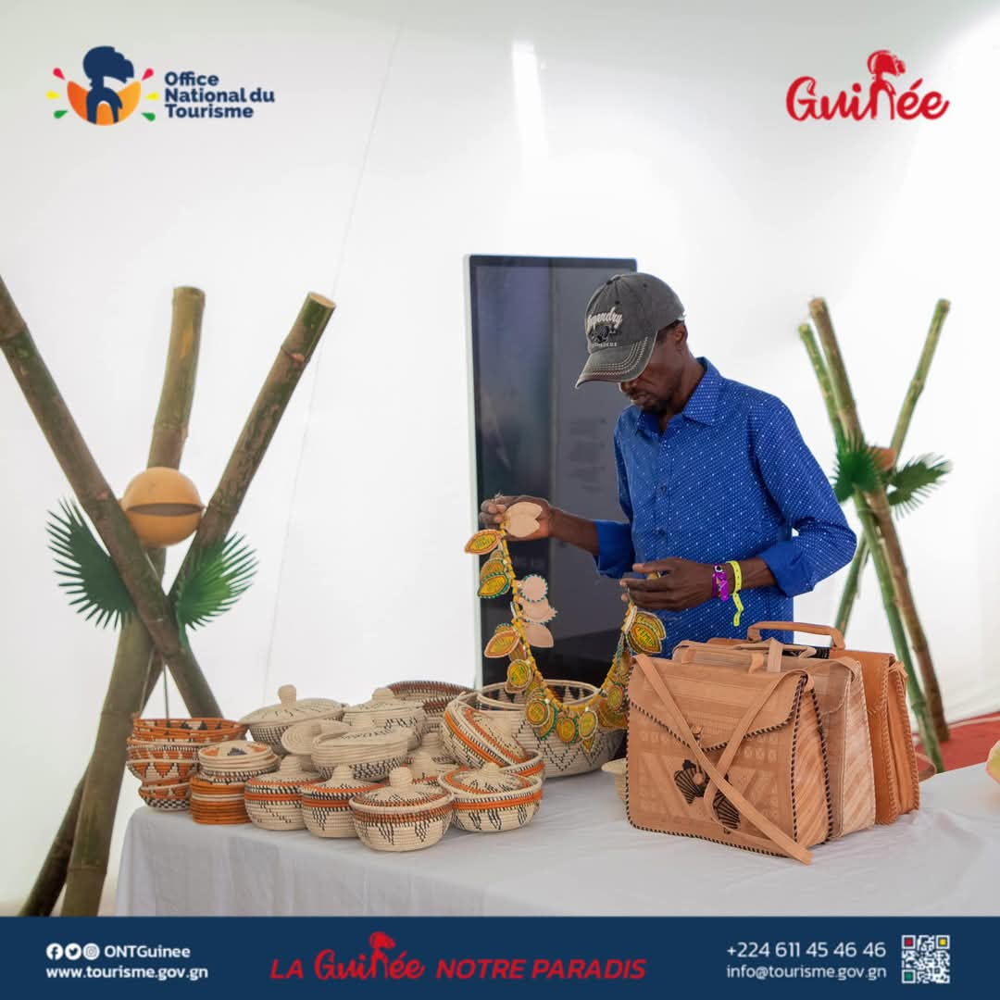

L'Artisanat Guinéen : Un Héritage de Créativité et de Savoir-Faire
L'artisanat en Guinée est bien plus qu'une simple production d'objets ; c'est une expression vivante de
l'âme
du pays, un reflet de ses traditions ancestrales, de sa diversité ethnique et de sa richesse naturelle.
Chaque pièce est le fruit d'un savoir-faire transmis de génération en génération, témoignant de
l'ingéniosité et de la créativité des artisans guinéens.
Une Mosaïque de Matériaux et de Techniques
Les artisans guinéens excellent dans la transformation d'une multitude de matériaux locaux.

Le Bois :
Le bois est omniprésent dans l'artisanat guinéen. Les sculpteurs, souvent issus de familles de
maîtres-artisans, donnent vie à des masques rituels aux expressions fascinantes, des statues
symboliques, des statuettes représentant la vie quotidienne, et des objets utilitaires
magnifiquement décorés comme des mortiers ou des tabourets. Les essences de bois locales, telles
que
le teck ou le bois de rose, sont privilégiées pour leur durabilité et leur beauté.

Le Cuir :
Le travail du cuir est particulièrement développé. Sacs, portefeuilles, sandales, ceintures, et
même
des objets de décoration sont confectionnés avec une grande finesse, souvent ornés de motifs
géométriques ou de tressages complexes.

Les Textiles :
Dans l'artisanat guinéen, les textiles jouent un rôle prépondérant, avec des techniques ancestrales
qui témoignent d'une richesse culturelle exceptionnelle. Parmi elles, le Lepi se distingue
particulièrement : cette technique de teinture à l'indigo, qui produit des motifs bleus profonds et
variés sur coton, est d'une importance capitale, car elle est reconnue comme un patrimoine culturel
guinéen à protéger. C'est un véritable trésor national, reflétant des traditions transmises de
génération en génération. À côté du Lepi, le tissu appelé "Forêt sacrée" occupe également une place de choix. Ce tissu
traditionnel est unique par sa méthode de teinture à base de boue fermentée et d'extraits végétaux,
créant des motifs géométriques noirs sur fond écru, chacun porteur de sens. Au-delà de ces deux
techniques emblématiques, les artisans guinéens produisent aussi de magnifiques tissus tissés à la main,
aux couleurs éclatantes, révélant une diversité et une créativité sans limites.
La Métallurgie :
Le travail du métal, notamment le fer et le bronze, produit des bijoux (colliers, bracelets,
bagues)
d'une grande délicatesse, des objets décoratifs et des instruments de musique. Les forgerons,
respectés pour leur maîtrise du feu et du métal, perpétuent des techniques ancestrales.

La Vannerie :
À partir de fibres végétales (raphia, rotin, paille), les vanniers tressent des paniers, des
nattes,
des chapeaux et des accessoires du quotidien, alliant utilité et esthétisme.
Des Créations Fonctionnelles et Symboliques
L'artisanat guinéen n'est pas seulement décoratif ; il est profondément enraciné dans la vie quotidienne
et
les pratiques culturelles. Objets rituels, instruments de musique (comme le Kora, le Balafon, le
Djembé),
ustensiles de cuisine, parures vestimentaires... chaque création porte en elle une histoire, un
symbolisme
ou une fonction spécifique.
Visiter les marchés locaux ou les ateliers d'artisans est une expérience immersive qui permet de
découvrir la
passion et la dextérité de ces artistes. Acquérir une pièce d'artisanat guinéen, c'est emporter avec soi
un
fragment de l'âme du pays, un témoignage tangible de son riche patrimoine culturel.